전기기능사 (2012-07-22 기출문제)
1과목: 전기 이론
1. 5[Ω], 10[Ω], 15[Ω]의 저항을 직렬로 접속하고 전압을 가하였더니 10[Ω]의 저항 양단에 30[V]의 전압이 측정 되었다. 이 회로에 공급되는 전전압은 몇 [V]인가?
- 30[V]
- 60[V]
- 90[V]
- 120[V]
(정답률: 72%)

2. 전압계의 측정 범위를 넓히는데 사용되는 기기는?
- 배율기
- 분류기
- 정압기
- 정류기
(정답률: 83%)
3. 전계의 세기 50[V/m], 전속밀도 100[C/m2]인 유전체의 단위 체적에 축적되는 에너지는?
- 2[J/m3]
- 250[J/m3]
- 2500[J/m3]
- 5000[J/m3]
(정답률: 49%)
4. 1상의 R = 12[Ω], XL = 16[Ω]을 직렬로 접속하여 선간전압 200[V]의 대칭 3상교류 전압을 가할 때의 역률은?
- 60[%]
- 70[%]
- 80[%]
- 90[%]
(정답률: 38%)
5. 그림은 실리콘 제어소자인 SCR을 통전시키기 위한 회로도이다. 바르게 된 회로는?(문제 원본 그림이 흐리고 정확하지 않습니다. 정답은 2번입니다. 참고용으로만 이용하세요.)
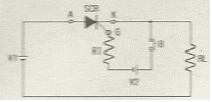
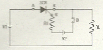
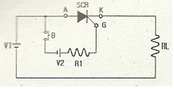
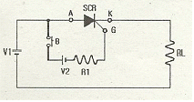
(정답률: 81%)
6. 그림과 같이 I[A]의 전류가 흐르고 있는 도체의 미소부분 △ℓ의 전류에 의해 이 부분이 r[m] 떨어진 지점 P 의 자기장 △H[A/m]는?
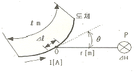
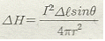
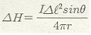
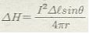
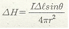
(정답률: 66%)
7. PN 접합의 순방향 저항은((ㄱ)), 역방향 저항은 매우 ((ㄴ)), 따라서 ((ㄷ)) 작용을 한다. ( )안에 들어갈 말로 옳은 것은?
- (ㄱ) 크고, (ㄴ) 크다, (ㄷ) 정류
- (ㄱ) 작고, (ㄴ) 크다, (ㄷ) 정류
- (ㄱ) 작고, (ㄴ) 작다, (ㄷ) 검파
- (ㄱ) 작고, (ㄴ) 크다, (ㄷ) 컴파
(정답률: 81%)
8. L=0.⑤[H]의 코일에 흐르는 전류가 0.⑤[sec] 동안에 2[A]가 변했다. 코일에 유도되는 기전력[V]은?
- 0.5[V]
- 2[V]
- 10[V]
- 25[V]
(정답률: 57%)
9. 자기회로의 길이 ℓ[m], 단면적 A[m2], 투자율 μ[H/m] 일때 자기저항 R[AT/Wb]을 나타내는 것은?
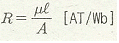
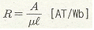
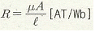
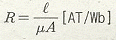
(정답률: 42%)
10. 2개의 자극 사이에 작용하는 힘의 세기는 무엇에 반비례 하는가?
- 전류의 크기
- 자극 간의 거리의 제곱
- 자극의 세기
- 전압의 크기
(정답률: 72%)
11. 자화력(자기장의 세기)을 표시하는 식과 관계가 되는 것은?
- NI
- μIℓ
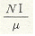
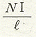
(정답률: 56%)
12. 2[Ω]의 저항에 3[A]의 전류를 1분간 흘릴 때 이 저항에서 발생하는 열량은?
- 약 4[cal]
- 약 86[cal]
- 약 259[cal]
- 약 1080[cal]
(정답률: 61%)
13. 평형 3상 △결선에서 선간전압 Vℓ과 상전압 Vp 와의 관계가 옳은 것은?
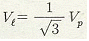
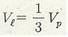
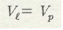
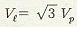
(정답률: 54%)
14. 전류에 의해 만들어 지는 자기장의 자기력선 방향을 간단하게 알아내는 방법은?
- 플레밍의 왼손 법칙
- 렌츠의 자기유도 법칙
- 앙페르의 오른나사 법칙
- 패러데이의 전자유도 법칙
(정답률: 74%)
15. 5[mH]의 코일에 220[V], 60[Hz]의 교류를 가할 때 전류는 약 몇 [A]인가?
- 43[A]
- 58[A]
- 87[A]
- 117[A]
(정답률: 41%)
16. 다음 중 1차 전지에 해당하는 것은?
- 망간 건전지
- 납축 전지
- 니켈카드뮴 전지
- 리튬 이온 전지
(정답률: 83%)
17. 어떤 도체의 길이를 n 배로 하고 단면적을 1/n로 하였을 때의 저항은 원래 저항보다 어떻게 되는가?
- n배로 된다.
- n2배로 된다.
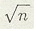
배로 된다- 1/n배로 된다.
(정답률: 71%)
18. 회로에서 검류계의 지시기가 0일때 저항 X는 몇 [Ω]인가?
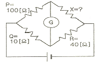
- 10[Ω]
- 40[Ω]
- 100[Ω]
- 400[Ω]
(정답률: 76%)
19. 정전 용량 C1, C2가 병렬 접속되어 있을 때의 합성 정전 용량은?
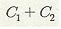
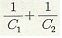
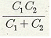
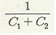
(정답률: 73%)
20.
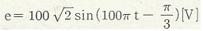
인 정현파 교류전압의 주파수는 얼마인가?- 50[Hz]
- 60[Hz]
- 100[Hz]
- 314[Hz]
(정답률: 60%)
2과목: 전기 기기
21. 무부하 전압과 전부하 전압이 같은 값을 가지는 특성의 발전기는?
- 직권 발전기
- 차동 복권 발전기
- 평복권 발전기
- 과복권 발전기
(정답률: 70%)
22. 동기 전동기의 특징과 용도에 대한 설명으로 잘못된 것은?
- 진상, 지상의 역률 조정이 된다.
- 속도 제어가 원활하다.
- 시멘트 공장의 분쇄기 등에 사용된다.
- 난조가 발생하기 쉽다.
(정답률: 45%)
23. 동기 발전기의 병렬 운전 조건이 아닌 것은?
- 기전력의 주파수가 같은 것
- 기전력의 크기가 같을 것
- 기전력의 위상이 같을 것
- 발전기의 회전수가 같을 것
(정답률: 71%)
24. 직류 발전기에서 브러시와 접촉하여 전기자권선에 유도되는 교류기전력을 정류해서 직류로 만드는 부분은?
- 계자
- 정류자
- 슬립링
- 전기자
(정답률: 74%)
25. 회전계자형인 동기 전동기에 고정자인 전기자 부분도 회전자의 주위를 회전할 수 있도록 2중 베어링 구조로 되어 있는 전동기로 부하를 건 상태에서 운전하는 전동기는?
- 초 동기 전동기
- 반작용 전동기
- 동기형 교류 서보전동기
- 교류 동기 전동기
(정답률: 33%)
26. 단상 전파정류 회로에서 교류 입력이 100[V]이면 직류 출력은 약 몇 [V]인가?
- 45
- 67.5
- 90
- 135
(정답률: 58%)
27. 기동 토크가 대단히 작고 역률과 효율이 낮으며 전축, 선풍기 등 수 [kW]이하의 소형 전동기에 널리 사용되는 단상 유도 전동기는?
- 반발 기동형
- 세이딩 코일형
- 모노사이클릭형
- 콘덴서형
(정답률: 58%)
28. 직류 전동기의 최저 절연저항 값은?
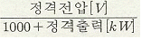
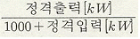
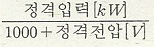
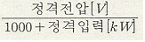
(정답률: 49%)
29. 농형 회전자에 비뚤어진 홈을 쓰는 이유는?
- 출력을 높인다.
- 회전수를 증가시킨다.
- 소음을 줄인다.
- 미관상 좋다.
(정답률: 62%)
30. 직류 전동기의 속도 제어 방법 중 속도 제어가 원활하고 정 토크 제어가 되며 운전 효율이 좋은 것은?
- 계자제어
- 병렬 저항제어
- 직렬 저항제어
- 전압제어
(정답률: 45%)
31. 60[Hz] 3상 반파 정류 회로의 맥동 주파수는?
- 60[Hz]
- 120[Hz]
- 180[Hz]
- 360[Hz]
(정답률: 70%)
32. 변압기 V결선의 특징으로 틀린 것은?
- 고장시 응급처치 방법으로 쓰인다.
- 단상변압기 2대로 3상 전력을 공급한다.
- 부하증가시 예상되는 지역에 시설한다.
- V결선시 출력은 △결선시 출력과 그 크기가 같다.
(정답률: 68%)
33. 아래 회로에서 부하의 최대 전력을 공급하기 위해서 저항 R 및 콘덴서 C의 크기는?
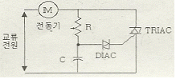
- R은 최대, C는 최대로 한다.
- R은 최소, C는 최소로 한다.
- R은 최대, C는 최소로 한다.
- R은 최소, C는 최대로 한다.
(정답률: 33%)
34. 권선형 유도전동기의 회전자에 저항을 삽입하였을 경우 틀린 사항은?
- 기동전류가 감소된다.
- 기동전압은 증가한다.
- 역률이 개선된다.
- 기동 토크는 증가한다.
(정답률: 30%)
35. 인견 공업에 사용되는 포트 전동기의 속도 제어는?
- 극수 변환에 의한 제어
- 1차 회전에 의한 제어
- 주파수 변환에 의한 제어
- 저항에 의한 제어
(정답률: 55%)
36. 보호 계전기의 배선 시험으로 옳지 않은 것은?
- 극성이 바르게 결선 되었는가를 확인한다.
- 내부 단자와 각부 나사 조임 상태를 점검한다.
- 회로의 배선이 정확하게 결선 되었는지 확인한다.
- 입력 배선 검사는 직류 전압으로 시험한다.
(정답률: 33%)
37. 직류 직권 전동기의 공급전압의 극성을 반대로 하면 회전방향은 어떻게 되는가?
- 변하지 않는다.
- 반대로 된다.
- 회전하지 않는다.
- 발전기로 된다.
(정답률: 45%)
38. 전기자저항 0.1[Ω], 전기자전류 104[A], 유도기전력 110.4[V]인 직률 분권 발전기의 단자전압 [V]은?
- 110
- 106
- 102
- 100
(정답률: 55%)
39. 단상 반파 정류 회로의 전원전압 200V, 부하저항이 20[Ω]이면 부하 전류는 약 몇 [A] 인가?
- 4
- 4.5
- 6
- 6.5
(정답률: 59%)
40. 동기발전기의 전기자 반작용 현상이 아닌 것은?
- 포화 작용
- 증자 작용
- 감자 작용
- 교차자화 작용
(정답률: 57%)
3과목: 전기 설비
41. 합성 수지관 공사에서 관의 지지점간 거리는 최대 몇[m] 인가?
- 1
- 1.2
- 1.5
- 2
(정답률: 55%)
42. 터널, 갱도 기타 이와 유사한 장소에서 사람이 상시 통행하는 터널내의 배선방법으로 적절하지 않은 것은?(단, 사용전압은 저압이다.)
- 라이팅덕트 배선
- 금속제 가요전선관 배선
- 합성수지관 배선
- 애자사용 배선
(정답률: 51%)
43. 폴리에틸렌 절연 비닐 시스 케이블의 약호는?
- DV
- EE
- EV
- OW
(정답률: 72%)
44. 옥내에 시설하는 사용전압이 400V 이상인 저압의 이동 전선을 0.6/1 kV EP 고무 절연 클로로프렌 캡타이어 케이블로서 단면적이 몇 [mm2]이상 이어야 하는가?
- 0.75[mm2]
- 2[mm2]
- 5.5[mm2]
- 8[mm2]
(정답률: 60%)
45. 흥행자 저압공사에서 무대용 콘센트 박스의 접지공사 방법으로 맞는 것은?(관련 규정 개정전 문제로 여기서는 기존 정답인 3번을 누르면 정답 처리됩니다. 자세한 내용은 해설을 참고하세요.)
- 제1종 접지공사
- 제2종 접지공사
- 제3종 접지공사
- 특별 제3종 접지공사
(정답률: 68%)
46. 가요 전선관 공사에서 가요 전선관의 상호 접속에 사용하는 것은?
- 유니언 커플링
- 2호 커플링
- 콤비네이션 커플링
- 스플릿 커플링
(정답률: 56%)
47. 일반적으로 특고압 전로에 시설하는 피뢰기의 접지공사는?(관련 규정 개정전 문제로 여기서는 기존 정답인 1번을 누르면 정답 처리됩니다. 자세한 내용은 해설을 참고하세요.)
- 제1종 접지공사
- 제2종 접지공사
- 제3종 접지공사
- 특별 제3종 접지공사
(정답률: 52%)
48. 다음 중 방수형 콘센트의 심벌은?
(정답률: 79%)
49. 가연성 가스가 새거나 체유하여 전기설비가 발화원이 되어 폭발할 우려가 있는 곳에 있는 저압 옥내전기설비의 시설 방법으로 가장 적합한 것은?
- 애자사용 공사
- 가요전선관 공사
- 셀룰러 덕트 공사
- 금속관 공사
(정답률: 77%)
50. 분전반에 대한 설명으로 틀린 것은?
- 배선과 기구는 모두 전면에 배치하였다.
- 두께 1.5㎜ 이상의 잔연성 합성수지로 제작하였다.
- 강판제의 분전함은 두께 1.2㎜ 이상의 강판으로 제작하였다.
- 배선은 모두 분전반 이면으로 하였다.
(정답률: 48%)
51. 비교적 장력이 적고 다른 종류의 지선을 시설할 수 없는 경우에 적용하며 지선용 근가를 지지물 근원 가까이 매설하여 시설하는 지선은?
- Y지선
- 궁지선
- 공동지선
- 수평지선
(정답률: 60%)
52. 가공전선에 케이블을 사용하는 경우에는 케이블은 조가용선에 행거를 사용하여 조가 한다. 사용전압이 고압일 경우 그 행거의 간격은?
- 50㎝ 이하
- 50㎝ 이상
- 75㎝ 이하
- 75㎝ 이상
(정답률: 36%)
53. 절연전선을 동일 금속 덕트내에 넣을 경우 금속 덕트의 크기는 전선의 피복절연물을 포함한 단면적의 총합계가 금속 덕트 내 단면적의 몇 [%] 이하로 하여야 하는가?
- 10
- 20
- 32
- 48
(정답률: 40%)
54. 400[V] 이하 옥내배선의 절연저항 측정에 가장 알맞은 절연저항계는?
- 250[V] 메거
- 500[V] 메거
- 1000[V] 메거
- 1500[V] 메거
(정답률: 66%)
55. 폭발성 분진이 있는 위험장소의 금속관 공사에 있어서 관상호 및 관과 박스 기타의 부속품이나 풀박스 또는 전기기계기구는 몇 턱 이상의 나사 조임으로 시공하여야 하는가?
- 2턱
- 3턱
- 4턱
- 5턱
(정답률: 73%)
56. 고압 가공 인입선이 일반적인 도로 횡단 시 설치 높이는?
- 3[m]이상
- 3.5[m]이상
- 5[m]이상
- 6[m]이상
(정답률: 52%)
57. 금속 전선관과 비교한 합성수지 전산관 공사의 특징으로 거리가 먼 것은?
- 내식성이 우수하다.
- 배관 작업이 용이하다
- 열에 강하다.
- 절연선이 우수하다.
(정답률: 61%)
58. 폭연성 분진이 존재하는 곳의 금속관 공사시 전동기에 접속하는 부분에서 가요성을 필요로 하는 부분의 배선에는 방폭형의 부속품 중 어떤 것을 사용하여야 하는가?
- 플렉시블 피팅
- 분진 플렉시블 피팅
- 분진 방폭형 플렉시블 피팅
- 안전 증가 플렉시블 피팅
(정답률: 76%)
59. 권상기, 기중기 등으로 물건을 내릴때와 같이 전동기가 가지는 운동에너지를 발전기로 동작시켜 발생한 전력을 반환시켜서 제동하는 방식은?
- 역전제동
- 발전제동
- 회생제동
- 와류제동
(정답률: 46%)
60. 전선 접속 방법 중 트위스트 직선 접속의 설명으로 옳은 것은?
- 6[mm2] 이하의 가는 단선인 경우에 적용된다.
- 6[mm2] 이상의 굵은 단선인 경우에 적용된다.
- 연선의 직선 접속에 적용된다.
- 연선의 분기 접속에 적용된다.
(정답률: 71%)
5[Ω] : 10[Ω] : 15[Ω] = 1 : 2 : 3
전압의 비율 = 저항의 비율 = 1 : 2 : 3
따라서 10[Ω] 저항에 가해진 전압 30[V]을 2로 나누면, 전체 회로에 가해진 전압이 된다.
30[V] ÷ 2 = 15[V]
따라서 정답은 "90[V]"이다.